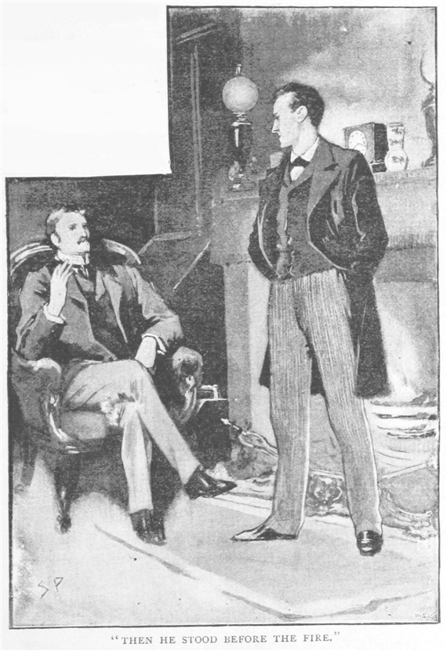
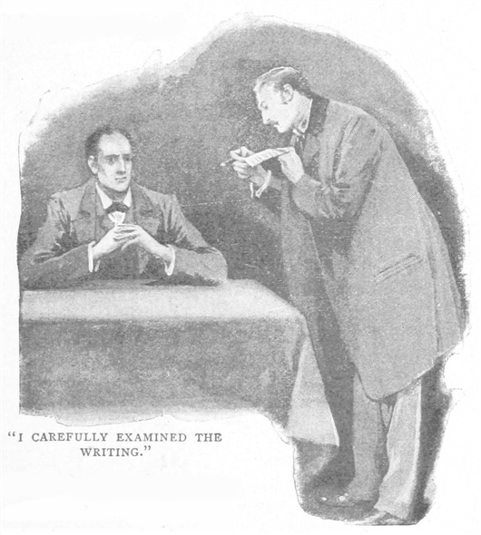
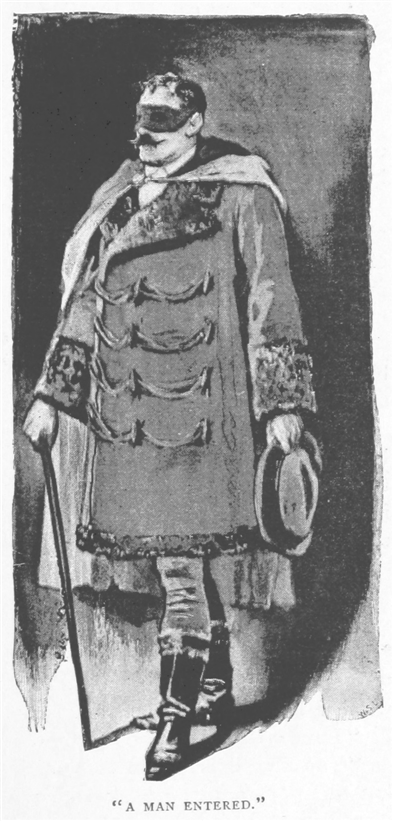
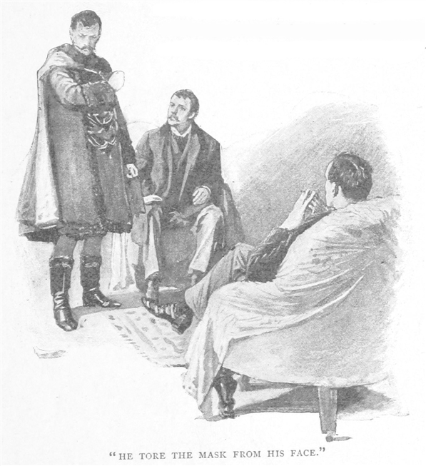
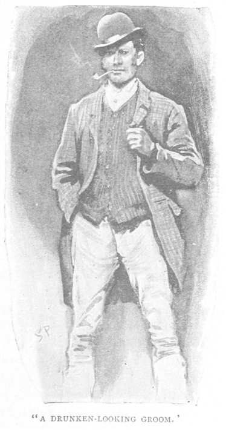
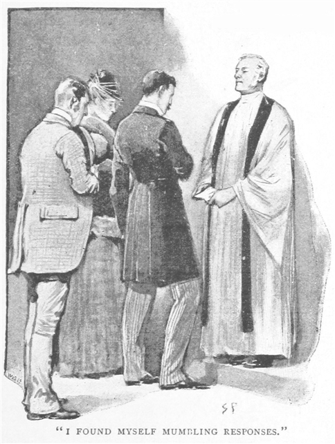
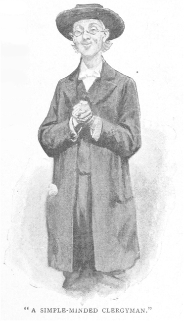
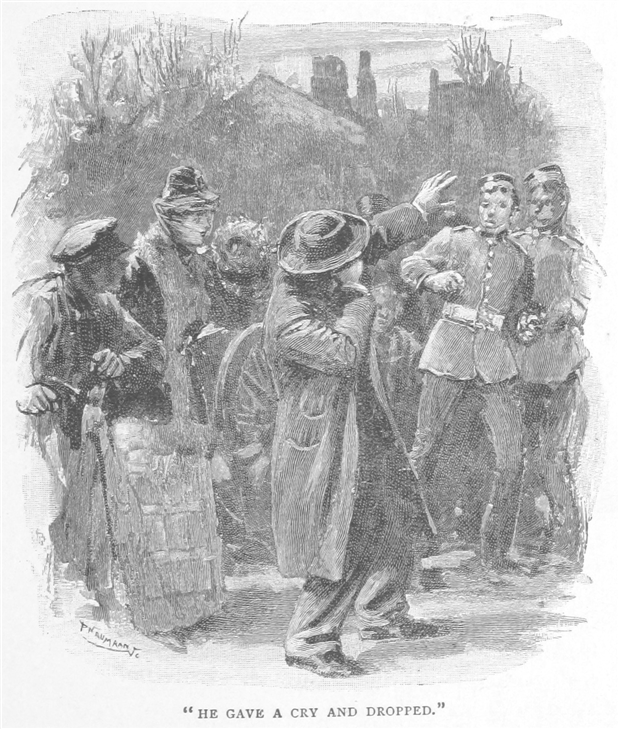
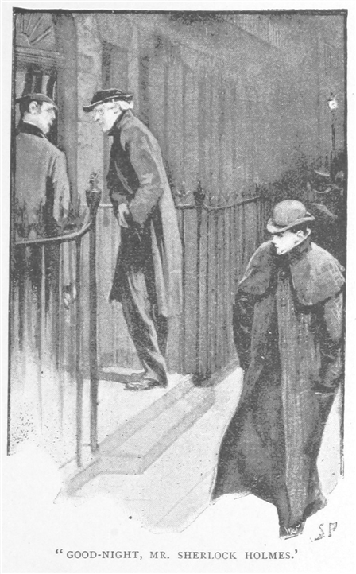
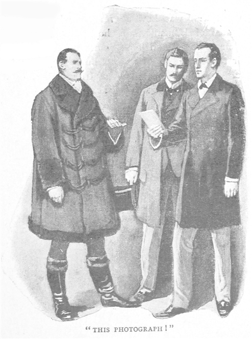

シャーロック・ホームズにとって、彼女はいつも『かの
近頃、ホームズとは会っていなかった。私の結婚が二人を疎遠にしていた。結婚生活はまさに至福で、初めて所帯主になったこともあり、私の熱意はすっかり家庭中心に注がれていた。かたやホームズと言えば、持ち前のボヘミアン気質から世俗を避け、ベイカー街の我らが下宿にとどまり、古書の山にうずもれ、コカインと覇気を交互に繰り返していた。つまり麻薬へ溺れたり、持ち前の洞察力で事件に乗り出したりである。例のごとく犯罪の研究に没頭し、多大なる才と人並みならぬ観察力を駆使して、警察でさえ絶望的と匙を投げた事件にも糸口を見つけ、謎を解き明かしていた。折々、ホームズの活動を風のうわさに聞くことがある。トリェポーフ殺人事件でオデッサに招聘されたとか、トリンコマリィでアトキンソン兄弟の奇妙な惨劇を解決したとか、ひいてはオランダ王室のために秘密裏に任務を遂行したとか。しかし私も日刊新聞の一読者として知るのみで、かつて友人でありパートナーであった男のことを、直接知っていたわけではなかった。
ある夜、一八八八年三月二十日のことだ。私は元の開業医に戻っていたのだが、患者の往診の帰途、ベイカー街を通りがかった。あの見慣れた戸口を見ると、求婚時代や、陰惨な『緋のエチュード』事件のことがいつも心に甦ってくる。私はふとホームズに会いたい、人並みならぬ能力を発揮するのを見たい、そんな衝動に駆られた。ホームズの部屋はあかあかと光がともり、私が見上げていると、ホームズの細く長い影法師が二度も窓に映った。うつむき、手を後ろで組み、部屋をせかせかと力強く歩き回っている。私は気心や癖を心得ているので、その態度や物腰からすべてが伺える。また仕事をしているのだ。麻薬の夢からうつつに帰り、新しい事件の香りに興奮を隠せないでいる。私が呼び鈴を鳴らすと、以前は私も同居していたあの部屋に案内された。
ホームズの物腰から、その気持ちはうかがえなかった。いつものことだったが、私にはなぜだか、彼が再会を喜んでいるように見えた。何も言わず、あたたかい目をし、肘掛椅子を手で示すと葉巻入れを投げてよこし、部屋の隅にある酒瓶台とガソジンを指し示した。そしてホームズは暖炉の前に立つと、何かを深く考えながら私を見るのである。

「幸せ太りか。」とホームズ。「思うにワトソン、以前より七ポンド半の増だ。」
「七だよ。」と私は返答する。
「うむ、もう少し考えるべきだったか。もうほんの少し重いはずだ、ワトソン。また開業、したね？ 僕に一言もなく、復帰か。」
「おい、どうしてそれを？」
「わかる。演繹だよ。君が近頃ずぶぬれになったこと、そしてひどくのろまな女中を雇っていることを知っていては、おかしいかね？」
「さすがホームズ、完敗だ。数世紀前なら君は火あぶりにされる。実を言うと木曜、田舎を歩いてね、泥水まみれで帰宅したんだ。だが服は着替えたし、どう推理したものか。女中のことだが、これがいかんともしがたくてね、妻が暇を出したよ。しかし、いや、私にはどうやったのかさっぱり。」
ホームズはほくそ笑み、長くきめ細やかな手をこすり合わせた。
「事はいたって簡単だ。僕の目に嫌でも入ってくる、君の革靴、左内側、ちょうど火灯りに照らされたあたりの、ほぼ平行な六つの傷が。これは明らかに、靴底の縁を誰かが不用意に擦ったためにできた痕だ。かたまった泥を取り除こうとしたわけだ。したがって、そう、二つの演繹が可能だ。君は悪天候に見舞われ、かつ君のお抱えはロンドン女中の例に漏れず、靴を傷つけるほどに使えない、と。開業についてだが、ある紳士がヨードホルムを鼻につくほど匂わせ、右人差し指に硝酸銀の黒いシミをつけ、聴診器が入っていると言わんばかりにシルクハットの右側を膨らませて入ってきたのだ。その人物が医療に携わっていると指摘できなければ、僕は相当のうつけ者にちがいない。」
いともたやすく推理の筋道を説明してしまうので、私は笑うほかなかった。「君の推理を聞くと、いつも可笑しいほど簡単なので、私にもできるかと思ってしまうね。だけども君の引き出す論拠ひとつひとつが、説明を受けるまで何の事やら。これでも私の目も、君には負けてないつもりなんだが。」
「無論。」とホームズは答え、紙巻き煙草に火をつけ、肘掛椅子に腰を下ろした。「見てはいるが、観察していない。差は歴然だ。例えば、君も玄関からこの部屋までの階段は何度も見ているね。」
「何度も。」
「幾度？」
「ん、何百回となく。」
「では何段ある？」
「何段とな？ 知らんよ。」
「無論！ 君は観察していない。だが見るだけは見ている。それが差だ。さぁ、僕は十七段あると知っている。見、そして観察しているからだ。ところで話のついでだが、君は瑣末なことが好きで、僕のつまらぬ体験をひとつふたつ記録に起こしたろう。そんな君ならこれも気に入ってくれよう。」とホームズが投げてよこしたのは、開封して卓上に置かれていた薄紅色の厚手の便せんだった。
「つい先刻郵便でね。声に出して読んでみたまえ。」
便せんに日付はなく、署名、住所すらなかった。
お訪ねするのは今夜、八時十五分前。一人の紳士が貴下にある極まりない重要事に関して意見を承るべく、参上致します。近時、貴下がヨーロッパのさるご王室に尽くされたことを見ても、貴下は世に見ぬ一大事でもためらいなく託せる方と存じます。私どもも貴下のご活躍を聞くこと、諸方面にございます。何卒、その折はご在宅くださるよう、また来訪者が覆面をしておりましても、お気を悪くなさらぬよう、お願い致します。
「実に謎めいている。」と私。「どういう意味だと思う？」
「まだデータがない。データなしに理論を立てるのは、致命的な誤りだ。無意識のうちに、事実と符合するべく推理するのではなく、推理に符合するべく事実を歪曲することになる。しかしここに紙がある。演繹してごらん。」
私はその筆跡、紙質を綿密に調べた。

「これを書いた人物は、おそらく金持ちだね。」と私は我がパートナーのやり方を出来るだけ模倣してみた。「このような紙なら、一袋半クラウンはくだらない。独特の硬質感と丈夫さがある。」
「独特、か。うまい言葉だ。」とホームズ。「英国製ではないのだ。灯りにかざしてみたまえ。」
その通りにすると、大文字のＥと小文字のｇ、続いてＰ、Ｇと小文字のｔが透かしで入っていた。
「これは何かな？」とホームズが訊く。
「製紙会社の名前、間違いなくその頭文字だ。」
「残念。Gt はゲゼルシャフト、ドイツ語で会社という意味だ。僕らがきまって Co と省略するのと同様。Ｐはもちろんパピーア、つまり紙のこと。さてEgだが、これは例の大陸地名辞典でも参照してみよう。」
ホームズは棚から褐色の分厚い本を取りだした。「エグロウ、エグロニッツ……これだ、エイガ。ドイツ語圏で、ボヘミアにありカールスバートのほど近くだ。『ヴァレンシュタイン終焉の地として有名。ガラス工房と製紙工場が多くある。』ほらほら、君、これは何かな？」
ホームズは目を輝かせ、勝ちどきの紫煙を煙草から上げた。
「この紙は、ボヘミアで作られました。」とは私。
「いかにも。そして書き手はドイツ人だ。こんな奇妙な構文をした文章があったろう、『私どもも貴下のご活躍を聞くこと、諸方面にございます』。フランス人やロシア人なら、このように書くまい。動詞の扱いが不躾なのは、ドイツ人だからだ。それゆえ残るところは、ボヘミアの紙で手紙を書き、覆面で顔見せを拒むドイツ人が何を望んでいるか、その一点だ。む、まさに今来たれり、勘違いでなければ、僕らの疑問はすぐに晴れる。」
そう言ってまもなく、馬の蹄の鋭い音、車輪が歩道の縁石に当たって軋む音が聞こえ、続いてベルが強く鳴り響いた。ホームズは口笛を吹く。
「二頭立てだ、この音は。」とホームズは窓の外をながめて、続ける。「当たり。小型で立派なブルーム型馬車で、申し分ない馬だ。片方だけでも一五〇ギニィはする。報酬はありそうだ、ワトソン、それだけかもしれぬが。」
「私は帰った方が良さそうだな、ホームズ。」
「いいや、博士。ここにいたまえ。ボズウェルあってこその僕だ。それに今度の依頼、面白そうだ。逃すと後悔の極みだよ。」
「しかし依頼人は……」
「気にすることはない。僕が君の助けを必要とするのだから、依頼人とて同じ事。ご来訪のようだ。椅子にかけたまえ、博士。そして最高のご助言を。」
ゆっくりで重い足取りが、階段あるいは廊下から聞こえ、やがてドアの手前でやんだ。それから高圧的に叩く大きな音がした。
「お入りなさい！」とホームズ。

訪ねてきた男は、背丈六フィート六インチはあり、ヘラクレスのごとき胸板の厚さと腕の太さがあった。召し物は豪奢だが、英国では悪趣味と見なされる類である。両前のコートの袖と襟にはアストラカン毛皮が広く付いていて、肩から羽織った濃紺のマントは裏地に
「手紙は拝見されましたな？」と深く厳しい声、強いドイツ語訛りで問いかける。「来訪は連絡したはずだが、」と、どちらに話したものかと思案した風に我々二人を比べ見た。
「お掛けください。」とホームズ。「こちらは我が友人でパートナーのワトソン博士。時折、事件に助力してくれます。どなた様とお呼びすればよろしいですか？」
「フォン・クラーム伯爵とお呼び願おう。ボヘミアの貴族だ。其方の友人たる紳士、かかる重要事をうち明けるに足る、まことに分別信義を備えた男であろうな？ 違うのであれば、其方一人に語るが良かろうかと存ずるが。」
私は席を外そうとしたのだが、ホームズが腕を掴み、椅子に押し込んだのだ。「二人でなければ、依頼はなかったことに。」とホームズ。「僕におっしゃってよいことは、この紳士の前でおっしゃっても何ら支障ありません。」
伯爵は広い肩をすくめる。「まず断っておきたいのだが、二年間他言しないと約束されたい。その後は重要ではなくなるだろうが、現時点、ヨーロッパの歴史に影響を及ぼしかねんと申しても、誇張はありますまいぞ。」
「約束いたします。」とホームズ。
「私も。」
「この覆面もお許し願おう。」と風変わりな客は話を続ける。「これは代理人を仰せつかわせたある高貴なお方のご希望であり、なお、実を申せば先ほど名乗った我が名も、本名ではあらぬ。」
「存じております。」とホームズは冷ややかに言う。
「事態は実に微妙である。どのような予防策を用いても、醜聞の種火が大きくなり、ヨーロッパのさる王室の名誉を毀損することを防がねばならぬ。飾らずに申すと、ボヘミア累代の王室、オルムシュタイン家が関与している事なのだ。」
「それも存じております。」とホームズはささやくように答えると、安楽椅子に身を沈め、目をつむった。
我らの依頼人は驚きを隠せず、この物憂げに椅子に沈む男へ視線をやった。ヨーロッパ一頭の切れる人物、ヨーロッパ一活動的な私立探偵と、誰もが認める男だ。ホームズは緩やかに眼を開き、もどかしげに巨躯の依頼人を見た。
「陛下がご自身の事件をご自身の口から語るということでしたら、僕もそれに相応しいご助言が可能です。」
依頼人は椅子から立ち上がると、抑えきれぬ動揺のために部屋の中を行ったり来たりした。やがて観念したような手つきで、顔から覆面をはぎ取り、床にたたきつけた。「いかにも。余は王である。どうして素性を偽ろうと企てたものか。」

「どうして？ そうです。」とホームズは呟く。「陛下が一言もおっしゃらぬうちから、我が面前にあらせられるのは、ヴィルヘルム・ゴッツライヒ・ジギースモーント・フォン・オルムシュタイン、つまりカッセル＝フェルシュタイン大公であり、ボヘミア累代の王であると存じておりました。」
「しかし、わかっておろうな。」風変わりな客は再度椅子に腰掛け、広く白い額に手をかざす。「わかっておろうな、余が直接参るというのは、ことのほか例外である。しかれども、事はまことに微妙であるから、代理人をたてれば、弱みを握られたも同然である。それゆえ余は其方に意見を求めようと、プラハから微行で参ったのだ。」
「それでは、お聞かせ願えますか。」とホームズは再び目をつむる。
「事実を簡潔にするとこうだ。五年ほど遡る、余がワルシャワに長期滞在したときのこと。余はかの有名にして果断なる女、イレーナ・アードラーと親交を結んだのだ。その名は存じておろう。」
「彼女の名を索引で調べてくれたまえ、博士。」とホームズは目を開けずに呟いた。ホームズは多年にわたり、あらゆる人物や出来事にまつわる項目を要約した備忘録を作っているので、ほぼどんな情報でも即座に提供できるのであった。索引を調べると、彼女の小伝は、ユダヤ教のラビと深海魚関連の論文を書いた海軍中佐の間に挟まれていた。
「見せてくれたまえ。」とホームズ。「ほぅ、一八五八年アメリカのニュージャージィ州生まれ。コントラルト歌手、ほぅ。スカラ座出演、ほぅ。ワルシャワ帝国歌劇団のプリマドンナ、うむ。歌劇界から引退、ん。ロンドン在住、さよう。察するに陛下は、この若い方と深いご関係になられ、不名誉なるお手紙をいくつかお送りになったので、今それらの手紙を取り戻したく願っておられる。」
「まさしくそうだが、いかにして……」
「秘密裏に結婚でも？」
「あらぬ。」
「法的に有効な書類、あるいは証書でも？」
「あらぬ。」
「それでは、陛下の危惧を察しかねます。この若い方が恐喝、その他の目的で手紙を使用したところで、いかにして本物と証明するものでありますか？」
「筆跡ではないか。」
「模倣できますゆえ、証拠不充分。」
「私用の書簡せんだが。」
「盗難。」
「我が封緘では。」
「偽造。」
「余の写真だ。」
「購入。」
「二人で撮った写真なのだ。」
「なんと！ まずうございます。陛下は実に軽率なことをなさいました。」
「正気の沙汰ではなかったろう。」
「ご自身をおとしめることになりかねません。」
「当時、余はほんの皇太子であった。若気の至りなのだ。今は三十になったが。」
「奪還せねばなりません。」
「手を尽くしたが、失敗に終わった。」
「陛下、お金で買い戻されるべきではありませんか。」
「頑として売るまい。」
「盗まれては。」
「五度試みた。人を雇い、押し込んで家捜しをさせたのが二度。旅行中、荷物から目を離させようとしたのが一度。道で待ち伏せをしたのが二度だ。いずれも成果はあげられなかった。」
「手がかりは？」
「まったくない。」
ホームズは笑みをこぼし、「なんとも愛くるしい事件でございます。」
「余には深刻な問題であるぞ。」と王は非難がましく言い返した。
「そうでしょうとも。ところでその人物は写真を使ってどうするつもりなのですか？」
「余を破滅させるのだ。」
「して、どのように？」
「余は近々婚姻を予定しておる。」
「そのようにうかがっております。」
「相手はクローティールド・ロトマン・フォン・ザクセン＝マイニンゲン、スカンディナヴィア王国の第二皇女である。かの王室の家憲が厳格なことは其方も存じておろう。王女自身の性格もまた、繊細そのものであるのだ。余の品行にいささかの影あらば、事は終局へと進んでいくだろう。」
「するとイレーナ・アードラーは。」
「写真を先方に送りつけると脅迫をな。あの女ならやりかねん。そのことは余がよく存じておる。知らぬであろうが、鉄の心を持つ女なのだ。外見こそは美しい女性であるが、内に秘めたる心たるや、不屈の男であるぞ。余が別の女と結婚するくらいなら、いかなる手段にでも訴え出るであろう……いかなる、な。」
「写真はまだ手元にあると確信しておられますね。」
「いかにも。」
「なにゆえですか？」
「婚姻が公式発表になる日に送ると言いおったからな。発表は次の月曜に予定されておる。」
「あぁ、では三日の猶予がございます。」とホームズはあくびをする。「好都合です。今、調べておきたい大事なことが一つ二つございますので。無論、陛下はロンドンに当座、ご逗留なさいますね？」
「そのつもりだ。ランガム・ホテルにフォン・クラーム伯爵名義で滞在しておる。」
「では、進行状況を電報でお知らせしましょう。」
「そうしていただこう。気が気でないのでな。」
「それから、報酬の方は？」
「白紙をお渡しする。」
「では全権を？」
「写真が戻るのならば、余は王国の一領土を与えることもいとわぬ。」
「当面の費用は？」
王はセーム革の袋をマントの内から取りだし、卓上に置いた。
「ここに金貨で三〇〇ポンド、紙幣で七〇〇ポンドある。」
ホームズはメモ帳から一枚、領収の旨を走り書き、王に手渡した。
「ご婦人の住所は？」
「セント・ジョンズ・ウッド、サーペンタイン並木道のブライオニ荘だ。」
ホームズは書き留めると、「もう一つ、質問がございます。写真はキャビネ判ですか？」
「そうだが。」
「しからば、おやすみなさいませ、陛下。じき、良い知らせをお届けすることを約束致します。それからワトソン、君もおやすみ。」
王のブルーム型馬車が通りを去っていったあと、ホームズはこう付け加えた。
「明日の午後三時にご訪問いただけると、これ幸い。君とこのささやかな事件について語りたく存じます。」
三時に遅れることなく、私はベイカー街に着いた。だがホームズは不在だった。家主の女性によると、朝八時に家を出たきりだという。私は暖炉のそばに腰掛け、ホームズの帰宅が遅くなろうとも待つことにした。すでに私は、ホームズの調査に対し並々ならぬ興味を抱いていた。これまで記録した二つの事件のように、奇々怪々たる特徴があるわけではない。事件の性質や依頼人の身分の高さに、独特のものを感じるのだ。加えて、今回の事件の性質を他にしても、そもそも、ホームズの事件の裏を読む力、鋭く切れる推理のために、私はその捜査方法を研究するのが楽しくてたまらない。快刀乱麻を断つその様を追いかけるわけだ。いつもうまく解決するのに慣れていたので、ホームズにも失敗することがあるなど、夢にも思わなかった。

四時頃扉が開くと、酔いどれの馬番が部屋に入ってきた。乱れた髪、ほおひげをたくわえ、赤ら顔で粗野な服といった様である。我が友人の巧みな変装術は熟知していると思っていたが、それでもホームズであると確信するには三度も見なければならなかった。うなずくと、ホームズは寝室に姿を消し、五分後いつも通りのツイードを礼儀正しく着用して現れた。両手をポケットに突っ込み、暖炉の前に足を投げ出したかと思うと、ホームズはしばらく気の済むまで笑い続けた。
「いやはや！」とホームズは叫ぶと、むせかえり、再度笑い出したあげく、ついには椅子の上でぐったりし、動かなくなってしまった。
「何事かね。」
「極めて滑稽なことだ。僕が今朝何をしてきたか、そしていかなる結末に至ったか、君には絶対わかるまい。」
「思いもつかん。イレーナ、いやイギリス風に発音しよう。つまりアイリーン・アドラー嬢の習慣とか、おそらく家でも見に行ったというところか。」
「ご名答。だが結末は想像を絶する。まぁ、聞きたまえ。朝八時少し前、僕は失業中の馬番という設定で、家を発った。馬を扱う男たちには、強い同業者意識がある。輪の中に入れば、知りたいことはなんでもわかる。すぐにブライオニ荘は見つかった。こぢんまりした住宅で、裏庭があるのだが、通りに玄関がほど近く、二階建てだった。扉はチャブ錠つき。右手に広い居間があって、豪華な調度品が並び、床につくほどの大きな窓もあった。窓には子どもでも開けられそうな、頼りないイギリス式の留め金がついていた。裏手にはこれといった所もなく、ただ廊下の窓が馬車小屋の屋根からなら届きそうだったくらいだ。屋敷の周囲を一周し、様々な観点からつぶさに調べてみたが、興味を引くものはもうなかった。
それから通りを徘徊してみると、期待通り、裏庭の壁沿いの小道に厩舎があった。馬番に馬磨きの手伝いをしてやると、駄賃に二ペンスくれてね、あと一杯のハーフ＆ハーフ、シャグ煙草を二服、そして念願のアドラー嬢の情報をあれこれと。たいして知りたくもない近所の人たちの日常を半ダースも聞かされたが。」
「で、アイリーン・アドラーとは何者かね？」と私。
「なんと付近の男どもを皆、虜にしているらしい。天下この地上において、もっとも麗しき女性である。とまぁ、サーペンタイン厩舎の男どもは口を揃えている。生活は平穏で、コンサートで唄いもするが、毎日五時に馬車で出かけ、七時丁度に夕食に戻ってくる。それ以外に外出するのはまれだ。訪ねてくるのは男一人のくせして、回数がとても多い。肌は浅黒く、容姿端麗、爽やかな男ときていて、少なくとも日に一回、たまに二回のときもある。名はゴドフリィ・ノートン、イナ・テンプル法学院の男だ。御者に内緒事など、ね。サーペンタイン厩舎より十数回と送っているから、何もかも知っていた。ひとしきり話し終えてから、僕はブライオニ荘に引き返し、そばを歩きながら、これからの身の振り方を思案した。
ゴドフリィ・ノートンはこの件に深く関与していると見ていいだろう。弁護士だ。不吉な予感がする。二人の間柄は？ 繰り返し訪れ何をもくろむ？ アイリーンは依頼人か、友人か、はたまた恋人か。前者ならば、写真は男の元で保管させているだろう。後者なら、その見込みもない。考えによっては、ブライオニ荘で仕事を続行せねばならぬし、学院にあるかの紳士の事務所に目を向けなければならぬ。この微妙な点により、調査が広範囲にわたることとなった。くどい話で退屈してないか心配だが、状況を理解してもらわねばならんので、小さな問題でも知っておいてほしいのだ。」
「傾聴しているよ。」と私。
「思案に暮れていると、ハンソム型馬車がブライオニ荘にやってきて、一人の紳士が飛び降りた。結構な美男子で、浅黒く、鷲鼻、口ひげのある男で、まさしくうわさに聞いた男その人であった。どうも火急のようで、御者に待てと叫ぶと、扉を開けた女中を押しのけ、家を熟知している風に飛び込んでいった。
三十分ほど在宅し、窓ごしに姿を視認できた。居間を歩き回り、腕を振って熱弁していたが、女はみとめられなかった。ほどなく男は家から出てきたが、先より慌てている様子だった。馬車に乗り込み、懐から金の懐中時計を取り出し、まじと見たのだ。
言うには、『韋駄天で頼む。まずはリージェント街のグロス＆ハンキィに寄って、それからエッジウェア通りの
馬車は行ってしまい、追うべきか追わざるべきか悩んでいると、小道の奥からしゃれた小型のランドー型馬車がやって来た。見ると、御者の上着はボタン半分で、ネクタイは耳の下までずれているし、馬具はいずれもまともに留められていないという始末。門前にくるやいなや女が玄関から飛び出し、乗り込んだ。一目しか伺えなかったが、実に麗しき女性で、男が命を捧げるのもうなずける。
彼女の場合は、『聖モニカ教会です、ジョン。二十分で着けましたら、半ソヴリン差し上げます。』と言った。
またとない好機だったのだ、ワトソン。走って追うべきか、馬車の後ろに飛び乗ってしがみつくべきか、そこへ通りをぬって辻馬車がやってきたのだ。御者は僕のぶざまな恰好を二度もにらんだが、有無も言わせず飛び込んで、こう言った。
『聖モニカ教会だ。二十分で着けば半ソヴリンくれてやる。』
時は正午二十五分前。何が起こるか察しが付いた。
馬車は速かった。あんなに速いとは思わなかったが、先の二つには追いつけなかった。到着した時点で、ハンソムもランドーも熱気収まらぬ馬とともに、入口前に停車していた。代金を支払い、教会へと急いだ。人気はなく、中にはただ三人、追った二人とサープリスを着た牧師だけだった。牧師は何やら二人をいさめているようで、三人ともひとかたまりになり祭壇の前に立っていた。僕は教会へぶらり立ち寄ったならず者の振りをし、側廊をうろついた。すると驚いたことに、突然、祭壇の三人が僕の方を顧み、ゴドフリィ・ノートンに至っては全速力で駆けてくるのだ。
『神に感謝する。』とノートンはのたまってね、『君でいい、来たまえ、こっちに来たまえ！』
僕は『何事でさ。』と訊いたのだが、
『来るんだ、君、来てくれ。もう三分しかないんだ、法的に通用しなくなる。』

と半ば引きずられるようにして祭壇へ連れていかれ、気が付くと小声で教え込まれたことを呟き、訳の分からぬ事を誓わされたあげく、独身女性アイリーン・アドラーと独身男性ゴドフリィ・ノートンの結婚の立会人になってしまった。式はあっという間で、左右からは紳士淑女に礼を述べられ、正面では牧師がにこやかに笑っている次第だ。しっちゃかめっちゃか、とはまさにこの事だ。先ほど笑ったのは、このことを思い出したからだ。証明書に何かしら不備でもあったのだろう、牧師は立会人なしでは結婚を認めぬと。人を捜しに出ようと思った矢先、幸運にも僕が現れたものだから、花婿は通りに出る手間が省けたというわけだ。花嫁は僕にソヴリン金貨一枚をくれてね、事の記念として時計鎖に付けておこうと思う。」
「思いがけない展開となったな。」と私。「それから？」
「うむ、調査が危機的状況にあることに気が付いた。二人がすぐ旅行に行くやもしれん。僕としても、早急に効果的な手を打たねばならぬ。しかし二人は教会の前で別れた。男は学院へ、女は自宅へ馬車で引き返すようだ。『いつものように、五時、馬車で公園へ。』と去り際に女は言い、それ以上の言葉は聞こえなかった。二人の馬車は別の方向へ走り去っていき、僕は手筈を整えるため舞い戻ったわけだ。」
「手筈？」
「コールド・ビーフと一杯のビールだ。」と呼び鈴を鳴らし、「忙しくて食べ物のことなど忘れていた。今宵は別のことで忙しくなるだろうがね。ところで博士、協力して欲しいことがある。」
「喜んで。」
「法を犯すことになっても？」
「構わん。」
「捕まるおそれも。」
「正当な理由あらば。」
「ああ、大義がある！」
「では、なんなりと。」
「それでこそ頼りがいがある。」
「しかし、何をするつもりだい？」
「ハドソンさんが皿を並び終えたら、明かそうではないか。ほら。」とホームズは家主の用意してくれた簡単な食事にありつく。「食べながら説明しよう。時間が足りないのだ。もう五時か。二時間後には現場にいなければならぬ。アイリーン嬢、いや夫人か、七時には馬車で戻ってくる。ブライオニ荘でご対面だ。」
「それから？」
「この件に関しては、僕に身を預けてくれたまえ。手筈はすでに整えてある。ただ一つ、言っておきたいことがある。たとえ何が起ころうと、手出し無用だ。いいかね？」
「傍観というわけか。」
「何もしてはいけない。きっと、気分を害することが起こると思うが、関わり合いにならんことだ。最終的に、僕は家の中へ運ばれてゆくこととなる。四、五分すれば、居間の窓が開くだろう。君は窓のそばに身を潜めておく。」
「うむ。」
「僕の姿が見えるはずだから、目をこらす。」
「うむ。」
「手を振るから――そこで――これから渡すものを部屋に投げ込んでくれたまえ。同時に、火事だ、とわめくんだ。ここまではいいかね？」
「問題ない。」
「取り扱いに注意するほどのものではない。」とホームズは懐から葉巻型の長い筒を取りだした。「配管工が使うごく普通の発煙筒だ。自動着火するよう、雷管が両端に付されている。君の役目はこいつだけだ。火事だと叫けば、大勢の野次馬が同調してくれるだろう。通りの外れまで歩いてゆけば、僕は十分で戻ってくる。この説明でわかったかね？」
「私は傍観し続け、窓のそばへ寄り、君を見、合図があればこいつを投げ込み、火事だとわめいて、通りの角で君を待つ。」
「いかにも。」
「よし、私に任せてくれ。」
「見事だ。もうそろそろ時間だ、僕は新しい役柄にならねば。」

ホームズは寝室に姿を消したかと思うと、ものの数分で、愛想が良く善良そうな非国教会の牧師になって戻ってきた。鍔広の黒い帽子、よれよれのズボン、白いネクタイに親切そうな笑顔、慈悲深く世話焼きな風貌、いずれをとっても名優ジョン・ヘアに負けず劣らずだ。ホームズは単に服装を変えているには終わらない。役に応じ、表情、癖、心に至るまで変幻自在。犯罪の専門家になったため、演劇界は名優を失い、科学界も名研究家を失った。
六時を十五分過ぎた頃、我々はベイカー街を出発した。予定の時刻より十分早く、サーペンタイン並木道に到着した。辺りはすでに薄暗がりで、屋敷の持ち主が帰宅するのを待って、ブライオニ荘の前をふらついていると、丁度ガス灯がついた。屋敷はシャーロック・ホームズの簡にして要を得た説明通りの建物であったが、辺りは思ったよりも静閑としていなかった。通りは静かというよりも、かえってにわかに活気づいていたほどだ。みすぼらしい身なりの一団が、街角で煙草を吹かしながら笑っていたり、刃物研ぎ屋が路上研磨をしていたり、二人の近衛兵が子守の女性と歓談していたり、めかし込んだ青年が幾人か、口に葉巻をくわえてうろついていたりしていた。
屋敷の前を行きつ戻りつしているとき、ホームズが切り出した。「いいかい、この結婚が事を簡単にした。写真は今や諸刃の剣だ。女もゴドフリィ・ノートンに見られたくないはずだ。我らの依頼人が姫君の目に触れさせたくないのと同じように。ここで疑問が生じる。僕らの捜す写真はどこにある？」
「ふむ、どこなんだろう。」
「持ち歩いているなど、ありそうもない。キャビネ判だ。大きすぎて、女性の召し物に隠すのは容易ではない。王が待ち伏せして持ち物をさぐる可能性があることは、重々承知だろう。二回も試みられている。従って、持ち歩いているという線はないと見て良い。」
「では、どこなんだ。」
「銀行か、弁護士か。どちらもありそうなことだが、僕はそう思わない。女性は元来秘密主義で、自分で隠すことを好む。他人の手には触れさせもしない。自分でしまい込む分には安心できるが、事務的に扱う人間に渡しては、裏から力がかかったり、あるいは政治圧力がかかったりするやもしれん。その上、一両日中に利用しようと心に決めている。ならば手元にあるに違いない。自宅の中だ。」
「しかし、二度も押し入っているんだろう？」
「ふん！ 物の捜し方を知らぬのだ。」
「だがどうやって捜すつもりだ？」
「捜すつもりはない。」
「では、どう？」
「教えていただく。」
「いくらなんでも断るだろう。」
「断れまいよ。む、
そのとき、並木道の角から馬車の側灯の光が弧を描くように射してきた。ブライオニ荘の玄関へ向かうのは、例の小型のランドーだった。止まると、角にいた一人の浮浪者が小銭目当てで扉を開けようと飛び込んできたが、同じ目的で突っ込んできた別の浮浪者に肱で追いやられてしまった。取っ組み合いの喧嘩が始まってしまい、二人の近衛兵が一方に加勢、刃物研ぎ屋がもう一方に加勢したので、騒ぎはあっという間に大きくなった。拳骨がぶつかり合い、馬車から降りた婦人はたちまち、拳や杖の飛び交う喧噪の渦の中へ巻き込まれてしまった。ホームズは婦人を守ろうと群衆の中へ突入したが、そばまで行ったかと思うと、叫び声をあげ、顔から多量の血を流して倒れてしまった。近衛兵はそれを見て逃げ出し、浮浪者たちも別の方向へ逃げた。めかし込んだ青年たちはこれまで小競り合いを傍観していたが、みんなして婦人を救い出し、負傷した男を介抱しようとした。結婚前の名で呼ぶが、アイリーン・アドラーは石段を駆け上がった。しかし最上段で立ち止まり、玄関の灯りにあでやかな姿態を映し出されつつ、通りを顧みるのだった。

「おいたわしや、あの方の傷は深うございますの？」
「死んだよ。」という声がちらほらあがる。
「いや、違う。まだ息はあるぞ！」と誰かが叫ぶ。「だが病院まではもたん。」
「実に勇敢な方ですわ。」と女の声。「この人がいらっしゃらなければ、奥様は財布も時計も盗まれていましたのよ。なんて悪漢でございましょう。乱暴な。あら、息がございます。」
「通りには寝かせておけない。お宅へ運んでよろしいですか、奥さん？」
「そうなさい。居間へお運びになるとよくてよ。休まるソファがございますから。こちらから、どうぞ。」
ホームズがゆっくりと物々しくブライオニ荘に運ばれていき、計画の舞台たる居間に安置させられるのを、私は窓のそば、自らの持ち場からじっと見守っていた。灯りがともされ、ブラインドは引かれていなかったので、ホームズがソファに寝かされる一部始終を見て取れた。今この瞬間、ホームズは自分のなす演技に良心の呵責を感じているのか知る由もないが、私はかつてないほど恥ずかしく思った。我々はあの美しき女性を欺こうとしているのに、慈悲深くも手負いの男を介抱しているではないか。しかしここで手を退いては、全幅の信頼を寄せてくれるホームズに対する、何とよこしまな背信行為であろうか。私は心を殺して、アルスター・コートの下から発煙筒を取りだした。つまるところ、彼女を傷つけるのではない。我々は、彼女が第三者を傷つけるのを阻止するだけなのだ、と自分に言い聞かせた。
ソファの上でホームズは身を起こし、酸欠でもがく仕草を見せた。女中が部屋を横切り、慌てて窓を開く。時を同じくしてホームズが手を振った。私は合図と見るや、発煙筒を部屋へ投げ込み、「火事だ！」と叫んだ。私の口から出た言葉は、群衆という群衆、紳士、馬番、女中、身なりのいいのも悪いのも、次々と飛び火し、皆が「火事だ！」と金切り声をあげるようになった。部屋の中では濃い煙霧が渦巻き、開け放された窓からもあふれ出る勢いだ。私は煙の中でうごめく人影を認め、直後、誤報だと群衆を鎮めるホームズの声がした。私は叫ぶ人々の間をくぐり抜け、通りの角へと向かった。十分経過すると、我が友人が腕に手を通してくれ、喧噪の現場から立ち去ることが出来たので、一安心したものだ。ホームズは無言で、数分の間きびきびと歩き、やがて我々はエッジウェア街に繋がる静かな通りに至った。
「素晴らしい出来だ、博士。」とホームズ。「何も言うことはない。万事うまくいった。」
「写真は？」
「隠し場所がわかった。」
「どうやって？」
「宣言通り、彼女が教えてくれた。」
「まだ雲をつかませておくつもりか？」
「僕とて雲作り職人ではない。」とホームズは笑う。「全く単純なことだ。もちろんのこと、通りにいた人は皆、協力者だ。今夜のためにまとめて雇った。」
「そんなことだろうと思った。」
「それと、突発した喧嘩の際、僕は手のひらに溶かした紅を隠していた。走り込んで、転倒、顔をひしと叩けば、哀れ見せ物の完成。古くさいいんちきだ。」
「ある程度、察しが付いた。」
「人々に僕はかつぎ込まれた。嫌とは言わせない、あのとき他に何が出来よう？ 僕が怪しいと睨んでいた、あの居間へ通された。居間か寝室のいずれかと踏んでいたが、どちらか見極めたかったのだ。ソファに寝かされ、酸欠の振りをし、窓を開けるよう仕向けたので、いざ好機、というわけだ。」
「あれで役に立ったのか？」
「まさに作戦の核だ。女性というものは、家が火事になれば、本能的に最も大切とするものへ駆け寄る。いかんともしがたい衝動というもので、一度ならずも利用したろう。ダーリントンすり替え疑惑やアーンズワース城の件でも世話になった。既婚女性はその赤子を抱え上げ、未婚女性は宝石箱に手を伸ばす。今日の淑女は我々の捜す物以上に、大事な物が家の中にあるとは到底思えない。必ずやそこへ行くはず。君の見事な叫び声。煙との相乗効果で、鉄の心も揺るがせる。彼女はあざやかに反応してみせた。写真は右側、呼び鈴の紐のすぐ上、羽目板をずらした窪みの中にあった。たちまち彼女はそこへ行き、半分出したのが垣間見えた。僕が誤報だと叫ぶと、元に戻し、発煙筒を一瞥して部屋から飛び出したきり、姿が見えなくなった。僕は身体を起こし、何とか口実を作り、家から抜け出したのだ。すぐさま写真を手に入れるか躊躇したが、御者が入ってきて、僕を凝視するものだから、慎重になった方が安全だと思えたのだ。急いては事をし損じるからね。」
「これからは？」と私。
「我々の調査は事実上、終了。明日、王同伴で訪ねる予定だ。君も来たくば来たまえ。居間で待つことになると思うが、彼女が現れたときには写真とともに消え失せるという寸法だ。陛下も手元に取り戻せると満足なさることだろう。」
「いつ頃、訪ねるつもりだい？」
「朝八時。彼女はまだ起きていないだろうから、自由に仕事が出来る。だが迅速に行動するに越したことはない。結婚で生活習慣が様変わりしているやもしれぬ。早速、王へ電報を打つとするか。」
我々はベイカー街にたどり着き、戸口で立ち止まった。ホームズが懐に鍵を探ったとき、誰かが通りがかり声を掛けられた。
「おやすみなさい、シャーロック・ホームズさん。」

そのとき歩道には幾人かいたが、挨拶したのはアルスターをまとった細身の青年らしく、急ぎ足で去っていった。
「あの声、聞き覚えがあるが。」とホームズは街灯で薄く照らされた街並みに目を注ぐ。「はて、誰だったか。」
その晩、私はベイカー街に泊まった。翌日、我々が朝のトーストとコーヒーを摂っているとき、ボヘミア王が部屋へ駆け込んできた。
「手に入れたとな！」と王はシャーロック・ホームズの両肩をつかみ、顔をぐっとのぞき込んだ。
「まだです。」
「だが、見込みはあるのだな。」
「ございます。」
「では、来たまえ。もう我慢ならん。」
「辻馬車を呼びましょう。」
「いや、余のブルームが待たせてある。」
「それは助かります。」と我々は階下へゆき、再びブライオニ荘へ向かった。
「イレーナ・アードラーは結婚しました。」とホームズ。
「結婚とな！ いつのことか？」
「昨日です。」
「果たして何やつと？」
「イギリス人弁護士で、名をノートンと。」
「そんな男を愛すまい。」
「僕としては、愛していることを望みます。」
「なにゆえ望むのだ。」
「理由は、陛下は将来悩まされずに済むからです。その女性が夫を愛せば、陛下を愛すことはない。陛下を愛さないのなら、おのずと邪魔をする理由もなくなりましょう。」
「なるほど。それにしても――ああ！ 余の身分に相応しくあれば！ なんと素晴らしき妃となったことか！」と王はふさぎ込んで黙ってしまい、サーペンタイン並木道に着くまで口を開かなかった。
ブライオニ荘の扉は開かれていて、年輩の女性が石段の上に立っていた。ブルームから下りる我々を、女性は冷ややかな目で見守っていた。
「シャーロック・ホームズさまとお見受けしますが。」と女性。
「僕がホームズです。」とパートナーは答え、不審と驚きに満ちたまなざしを向けた。
「まぁ。奥様が、あなたがお越しになるとおっしゃったのです。奥様は今朝方、旦那様とともに五時十五分、チャリング・クロス発大陸行の汽車でお発ちになりました。」
「何と！」とシャーロック・ホームズは無念と驚愕のため、顔面を蒼白にして、立ちくらむ。「ご婦人は、イギリスを離れたと？」
「二度とお戻りになりません。」
「手紙と写真はいかに？」と王は声もかすれかすれに、「万事やんぬるかな。」
「確かめましょう。」とホームズは女中を押しのけ、居間へと飛び込んだ。王も私も後に続いた。家具は部屋中に散乱し、棚は外され、引き出しは開いているという始末で、高飛びに先駆け、あの女性が引っかき回した様子だった。ホームズは呼び鈴の紐へ駆け寄り、羽目板をずらし、手を突っ込んだ。出てきたのは一枚の写真と一通の手紙だった。写真にはイヴニング・ドレス姿のアイリーン・アドラーが写っていて、手紙には『シャーロック・ホームズさまへ。ご訪問時は不在につき。』と宛名してあった。友人は手で開封し、我々三人で読んだ。日付は先の晩になっており、文面は次の通りである。
親愛なるシャーロック・ホームズさま
実に見事なお手際でございます。すっかり騙されてしまいました。火事の叫びがございますまで、ゆめゆめ疑いもしませんでした。うかつにも我が心の内をさらけだしたことにはっとして、考えてみました。数ヶ月ほど前、警告されたことがございました。王が代理人をお立てになるなら、きっと貴方でございましょう、と。その方は住所まで教えてくださいました。それですのに、貴方に知りたいこと全てを見破られてしまいました。疑いを持ち始めた後でさえ、あの親切な老牧師さまを悪く思うのは苦しゅうございました。ですが、ご存じのように私も女優として修練を積んでおります。男装のごときは、訳ないことでございます。折に触れては、その身自由さを利用しておりました。ジョン、わたくしの御者でございますが、見張りを申しつけまして、わたくしは、散歩服と呼んでいる服に身を包み、下へゆきますと、貴方は丁度お帰りになるところでした。
そして、お宅の戸口まで貴方をつけてゆきまして、わたくしはあの名高いシャーロック・ホームズさまの関心の的でございますことを確信いたしました。はしたのうございますが、おやすみ申し上げ、そのまま夫の顔を見に法学院へ参ったのです。
わたくしども二人は、かくのごとき畏怖すべき方を敵に回しては、高飛びしてしまいますのが良策と考えました。ですので、明日ご来宅なさる際には、もぬけの殻でございましょう。写真につきましては、ご安心を、と依頼人にお伝えくださいませ。わたくしは現在、もっと良き人を愛し愛されております。陛下は、昔つれない仕打ちあそばした女の妨害などございませんから、御意のままになさいませ。写真は護身のために取っておきます。今後どのようなことがあってもいいよう、ただお守りとして手元に置くのみでございます。陛下がご所望ならばとこの写真を一枚残していきます。シャーロック・ホームズさまに心から。
実に見事なお手際でございます。すっかり騙されてしまいました。火事の叫びがございますまで、ゆめゆめ疑いもしませんでした。うかつにも我が心の内をさらけだしたことにはっとして、考えてみました。数ヶ月ほど前、警告されたことがございました。王が代理人をお立てになるなら、きっと貴方でございましょう、と。その方は住所まで教えてくださいました。それですのに、貴方に知りたいこと全てを見破られてしまいました。疑いを持ち始めた後でさえ、あの親切な老牧師さまを悪く思うのは苦しゅうございました。ですが、ご存じのように私も女優として修練を積んでおります。男装のごときは、訳ないことでございます。折に触れては、その身自由さを利用しておりました。ジョン、わたくしの御者でございますが、見張りを申しつけまして、わたくしは、散歩服と呼んでいる服に身を包み、下へゆきますと、貴方は丁度お帰りになるところでした。
そして、お宅の戸口まで貴方をつけてゆきまして、わたくしはあの名高いシャーロック・ホームズさまの関心の的でございますことを確信いたしました。はしたのうございますが、おやすみ申し上げ、そのまま夫の顔を見に法学院へ参ったのです。
わたくしども二人は、かくのごとき畏怖すべき方を敵に回しては、高飛びしてしまいますのが良策と考えました。ですので、明日ご来宅なさる際には、もぬけの殻でございましょう。写真につきましては、ご安心を、と依頼人にお伝えくださいませ。わたくしは現在、もっと良き人を愛し愛されております。陛下は、昔つれない仕打ちあそばした女の妨害などございませんから、御意のままになさいませ。写真は護身のために取っておきます。今後どのようなことがあってもいいよう、ただお守りとして手元に置くのみでございます。陛下がご所望ならばとこの写真を一枚残していきます。シャーロック・ホームズさまに心から。
かしこ
アイリーン・ノートン 旧姓アドラー
「なんたる女――まさに、なんたる女だ！」と我々三人が親書を読み終えたとき、ボヘミア王が叫んだ。「言った通り、怜悧決然たる女であろう？ きっと王妃の誉れとなったであろうに。惜しむらくは、家格が余には不相応であったことか。」
「僕が拝見しましても、この女性、なるほど陛下とはたいへん格が違うようです。」とホームズは冷ややかに言う。「遺憾ながら、陛下のご依頼を上首尾な結果に終わらせることが出来ませんでした。」
「その逆であるぞ、貴公。」と王は感嘆する。「まことに上首尾である。あの女の言葉に嘘偽りはない。写真は火中にくべたも同然、今や安全である。」
「陛下にそう言っていただき光栄に存じます。」
「大儀であった。礼をつかわすゆえ、何なりと言うがよかろう。この指輪なぞ……」と王は指からヘビの形をした
「陛下は僕にとってもっと価値のある物をお持ちです。」とホームズ。
「何であるか申せ。」
「この写真です！」

王はホームズを驚きの眼で見詰める。
「イレーナの写真とな！」と王は声を上げる。「よかろう。望むのであれば。」
「ありがたく存じます、陛下。しからば、もはやこの件は解決いたしました。ごきげんよう、と謹んで申し上げます。」とホームズはお辞儀し、王の差し出した手に見向きもせず、きびすを返し、私とともに下宿へ引き上げたのだった。
以上がボヘミア王室を脅かした一大醜聞であり、ホームズの深謀が一女性の機知にうち砕かれた事件の顛末である。以前は女性の浅知恵と冷やかしていたホームズも、最近は一言もない。そしてアイリーン・アドラーに触れたり、写真を引き合いに出したりする際には、ホームズは常に『かの女』という敬称を使うのである。